Design Google Maps
1 billion DAU ke liye Google Maps ka simple version: location updates, navigation + ETA, aur map rendering. Map projections, geohash tiles, routing tiles, CDN, Kafka, Cassandra aur adaptive rerouting — sab Hinglish mein.
Introduction
Hum Google Maps ka ek simple version design karenge. Kuch facts (notes se):
- 2005 mein shuru hua.
- Services: satellite imagery, street maps, real-time traffic, route planning.
- 2021 tak: 1 billion DAU, duniya ka 99% coverage, roz 25 million updates real-time location info ke.
Ye book ke sabse complex chapters mein se hai, kyunki isme ek saath teen alag tarah ki problems hain: write-heavy ingestion (location), compute-heavy graph search (navigation), aur bandwidth-heavy static content (map tiles).
Step 1: Problem aur scope
| Candidate | Interviewer |
|---|---|
| Kitne DAU? | 1 billion |
| Kaunse features? | Location update, navigation, ETA, map rendering |
| Road data kitna bada? Access hai? | Alag sources se mila hai — TBs ka raw data |
| Traffic conditions consider karein? | Haan — accurate ETA ke liye |
| Travel modes — walking, biking, driving? | Haan, support karne hain |
| Multi-stop directions? | Is interview ke scope mein nahi |
| Business places aur photos? | Achha sawaal, lekin consider nahi karna |
Focus: teen features — user location update, navigation service (with ETA), map rendering.
Non-functional requirements
- Accuracy: user ko galat directions nahi milni chahiye.
- Smooth navigation: map rendering smooth ho.
- Data aur battery usage: client jitna kam data aur battery use kare utna achha — mobile pe bahut important.
- General availability + scalability.
Map 101: basic concepts
Positioning system
Duniya ek sphere hai jo apni axis pe ghoomti hai. Position do numbers se: latitude (kitna north/south) aur longitude (kitna east/west).
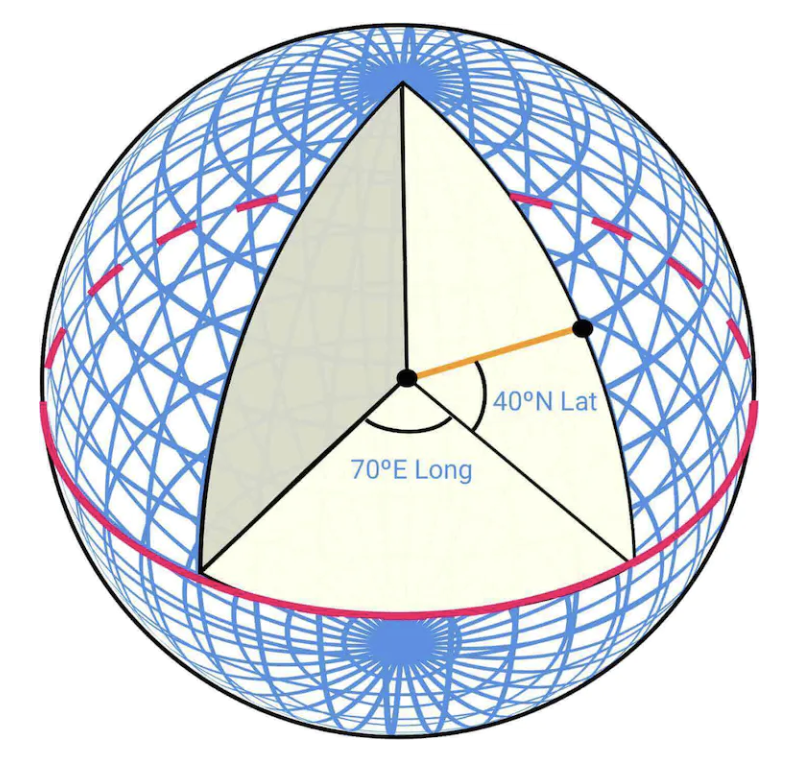
3D se 2D: map projection
Sphere ke points ko flat plane pe le jaana = map projection. Har tareeke ke pros/cons hain, aur lagbhag sab actual geometry ko distort karte hain.
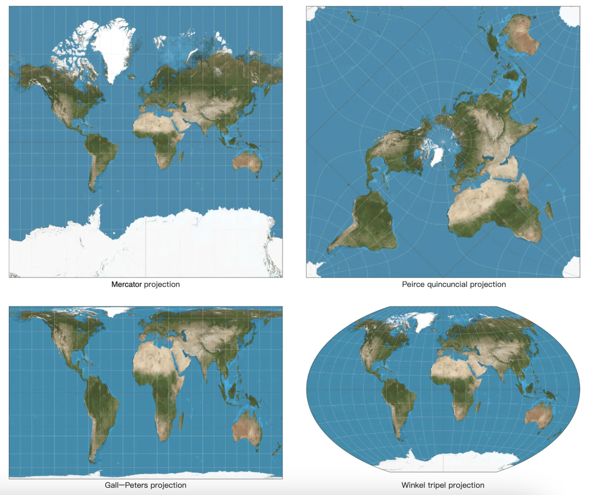
Google Maps ne Mercator ka modified version Web Mercator choose kiya. (Web Mercator mein grid ke right angles bane rehte hain — isliye square tiles banana aur zoom karna aasaan hai.)
Geocoding
Geocoding = address → geographic coordinates. Jaise "1600 Amphitheatre Parkway, Mountain View, CA" → (lat 37.423021, lng -122.083739). Ulta (coordinates → human-readable address) = reverse geocoding. Ek tareeka: interpolation — GIS (Geographic Information Systems) jaise sources ke data use karna jahan street network geo coordinate space pe mapped hai.
Geohashing
Geohash ek encoding system hai jo geographic area ko letters+digits ki string mein encode karta hai. Duniya ko flat surface maan ke recursively chaar quadrants mein todta hai (Chapter 16 mein detail).
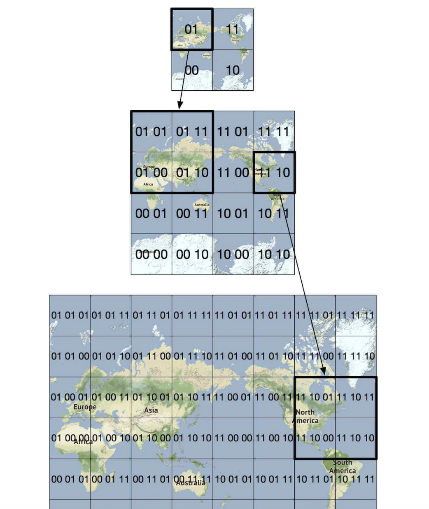
Map rendering: tiling
Poore map ko ek bada image banake render nahi karte — duniya ko chhote tiles mein todte hain. Client sirf relevant tiles download karke mosaic ki tarah jodta hai. Har zoom level ke alag tiles; client apne zoom level ke hisaab se tiles choose karta hai. Example: poori duniya zoom-out pe sirf ek 256×256 tile.
Road data processing for navigation
Zyada tar routing algorithms mein intersections = nodes, roads = edges — ek graph.
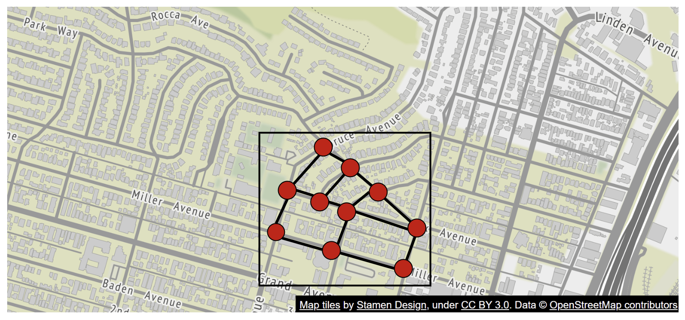
Navigation algorithms Dijkstra ya A* ke modified versions use karte hain. Pathfinding ki performance graph size pe bahut sensitive hai — poori duniya ko ek graph banake algorithm chalana memory aur time dono mein impossible. Solution: tiling jaisa — duniya ko chhote graphs (routing tiles) mein baanto.
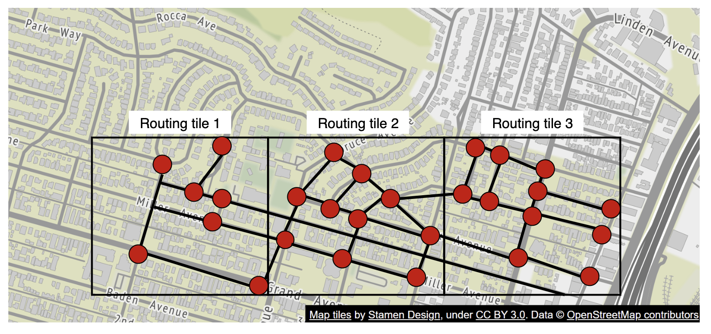
Har routing tile apne neighbouring tiles ke references rakhta hai; algorithm traverse karte hue tiles ko jodta jaata hai. Isse memory kam lagti hai aur sirf source/destination ke liye zaroori tiles load hote hain.
Hierarchical routing tiles
Lambe routes (e.g. ek state se dusre state) ke liye chhote detailed tiles jodna bhi slow/memory-heavy hai. Isliye alag levels of detail ke routing tiles:
- Local (sabse detailed): chhote tiles, local roads.
- Arterial: medium tiles, district ko jodne wali badi sadkein.
- Highway: bade tiles, sirf highways jo cities/states ko jodte hain.
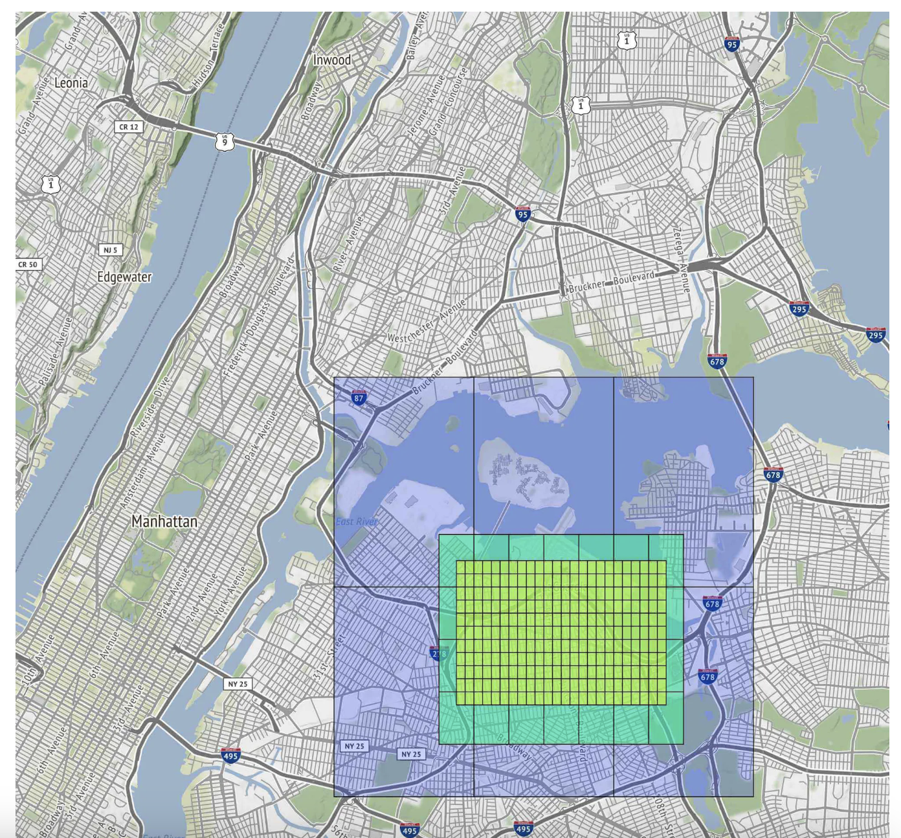
Har level ke tiles ke beech connecting edges bhi hote hain — jaise local street se freeway entrance.
Back-of-the-envelope estimation
Storage
- Map of the world: zoom level 21 tak har level pe tiles 4× badhte hain — zoom 21 pe ~4.4 trillion tiles; har tile ~100 KB maano to ~440 PB. Lekin duniya ka bahut bada hissa (ocean, desert) almost identical tiles hain jo bahut compress hote hain — notes ka estimate: ~70 PB (sab zoom levels milake, compression ke baad).
- Metadata: har tile ka metadata negligible — skip.
- Road info: TBs ka raw data → routing tiles mein transform; size raw data jitna hi order.
Server throughput (navigation/location QPS)
- 1B DAU × 35 min/week → ~5B minutes/day navigation usage.
- Har second GPS update bheje to: 5B × 60 / 86,400 ≈ ~3M QPS — bahut zyada.
- Har second bhejna zaroori nahi: client 15s ke updates batch kare → ~3M / 15 ≈ ~200k QPS; peak (~5×) ≈ ~1M QPS (notes ke numbers).
Step 2: High-level design
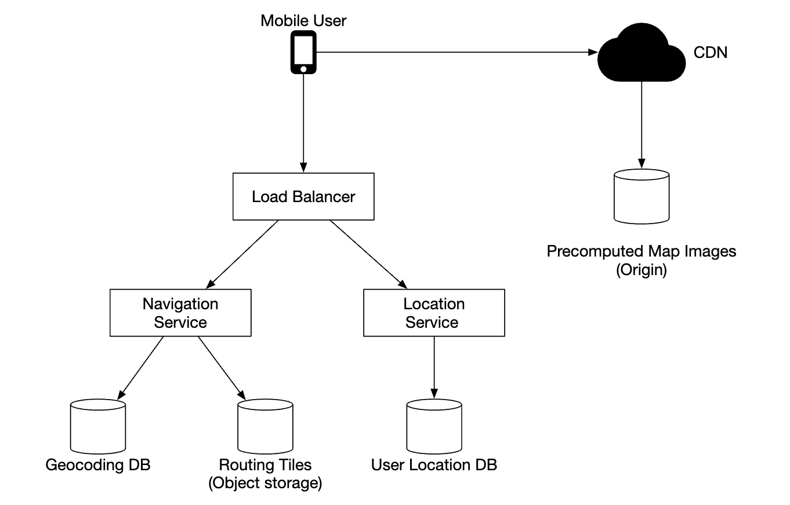
Location service
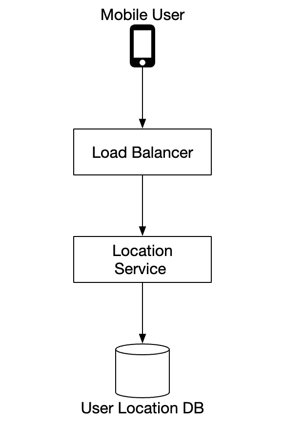
Location service user ki location record karta hai — har t seconds pe update. Is data stream ke kai fayde: ETA zyada accurate, live traffic monitor karna, nayi/band sadkein detect karna, user behaviour analyze karna (personalization).
Har second server ko bhejne ke bajaye client-side batching:
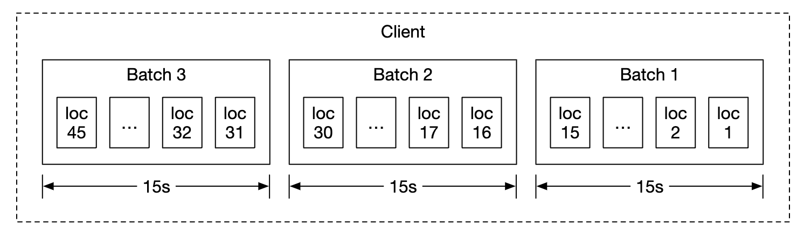
Is optimization ke baad bhi Google Maps scale pe load bahut hai — isliye write-heavy optimized DB jaise Cassandra. Aur location updates ko aage analysis ke liye Kafka pe stream karte hain.
POST /v1/locations
Parameters
locs: JSON encoded array of (latitude, longitude, timestamp) tuples.Navigation service
A se B ka reasonably fast route dhoondhna. Thodi latency chalegi; route ka sabse fastest hona zaroori nahi, lekin accurate hona zaroori hai.
GET /v1/nav?origin=1355+market+street,SF&destination=DisneylandExample response (notes se):
{
"distance": {"text":"0.2 mi", "value": 259},
"duration": {"text": "1 min", "value": 83},
"end_location": {"lat": 37.4038943, "Ing": -121.9410454},
"html_instructions": "Head <b>northeast</b> on <b>Brandon St</b> toward <b>Lumin Way</b><div style=\"font-size:0.9em\">Restricted usage road</div>",
"polyline": {"points": "_fhcFjbhgVuAwDsCal"},
"start_location": {"lat": 37.4027165, "lng": -121.9435809},
"geocoded_waypoints": [
{ "geocoder_status": "OK", "partial_match": true,
"place_id": "ChIJwZNMti1fawwRO2aVVVX2yKg", "types": ["locality", "political"] },
{ "geocoder_status": "OK", "partial_match": true,
"place_id": "ChIJ3aPgQGtXawwRLYeiBMUi7bM", "types": ["locality", "political"] }
],
"travel_mode": "DRIVING"
}Response kaise padhein: distance.value meters mein (259 m) aur duration.value seconds mein (83 s) — text fields sirf display ke liye. start_location/end_location lat/lng hain (notes mein "Ing" typo hai — asal mein "lng"). html_instructions turn-by-turn instruction hai jo UI mein seedha render hoti hai. polyline.points ek encoded polyline hai — route ke saare points ek compact string mein (bandwidth bachane ke liye). geocoded_waypoints batata hai ki origin/destination text ko geocoder ne kaise resolve kiya (place_id, partial_match).
Traffic changes aur reroute abhi consider nahi — deep dive mein.
Map rendering
Saare map tiles client pe rakhna impossible — petabytes. Server se on-demand fetch, client ki location aur zoom level ke hisaab se. Kab fetch karein? User zoom in/out kare, aur navigation ke dauran jab user naye tile ki taraf badhe.
Tiles client tak kaise pahunchein?
- Option 1: dynamically build karo (client location + zoom pe) — server pe huge load, aur dynamic content ko cache karna mushkil.
- Option 2 (chosen): har zoom level ke pre-generated tiles, geohash se identify — static files, CDN se serve.
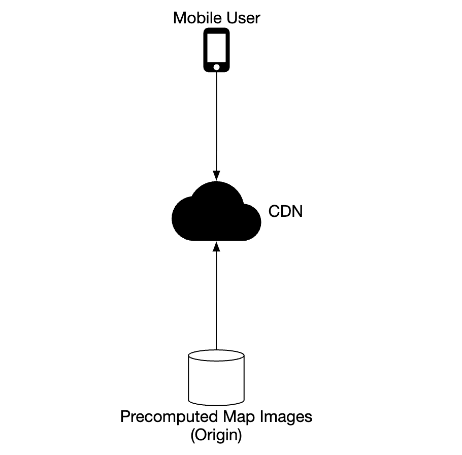
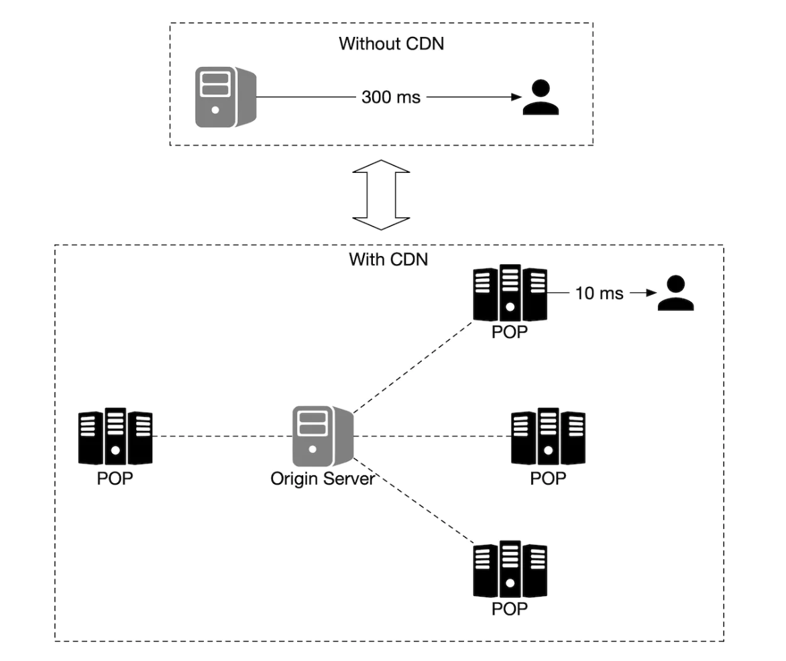
CDN users ko sabse nazdeek POP se tiles deta hai — latency kam. Static tiles ka ek aur fayda: highly cacheable — popular areas ke tiles CDN mein hamesha garam.
Tile URL kaun calculate kare?
- Client side: client khud lat/long + zoom se geohash → tile URL bana le. Lekin ye algorithm client mein hardcode ho jaata hai — mobile apps ko update karwana slow aur risky hai, to is scheme ko long term commit karna padega.
- Server side (map tile service): ek simple API jo client ki jagah tile URLs calculate kare — ek extra API call ka cost, lekin operational flexibility bahut zyada (scheme badalna server pe).
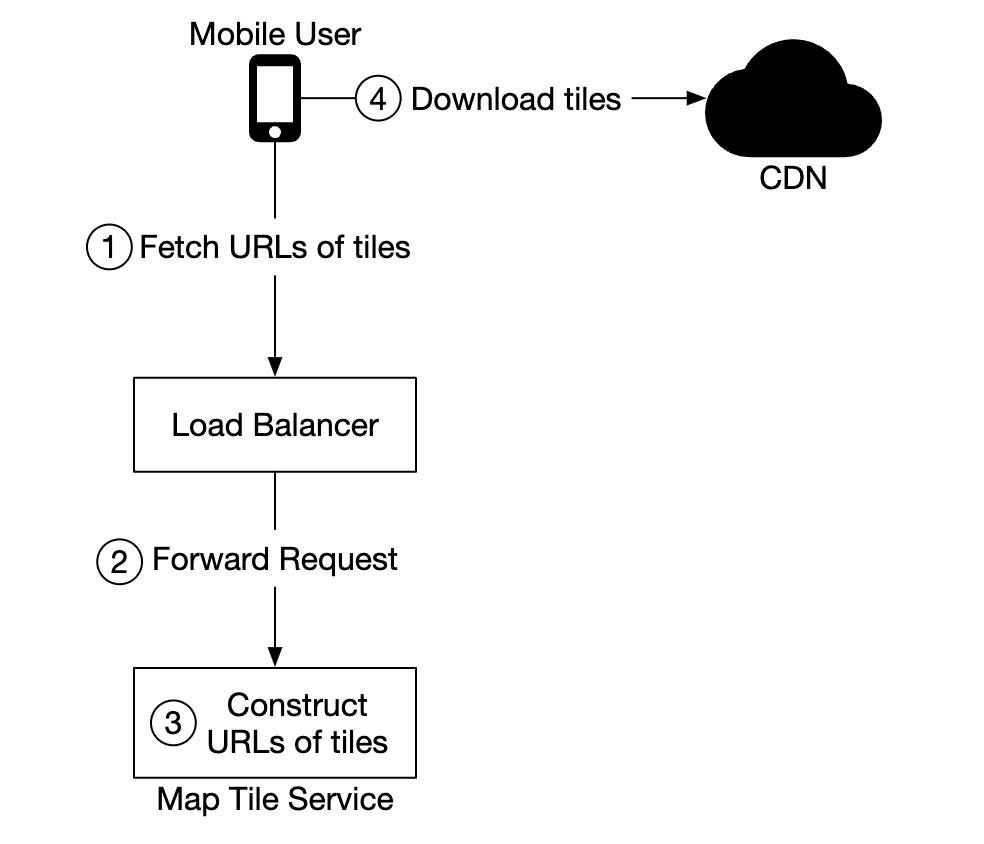
Step 3: Design deep dive
Data model
1. Routing tiles
Initial road dataset alag sources/authorities se aata hai, aur user location data se time ke saath improve hota hai. Raw data unstructured hai, isliye ek periodic offline processing pipeline (routing tile processing service) use graph-based routing tiles mein transform karti hai.
Tiles ko database mein nahi, S3 jaisi object storage mein rakho — koi DB feature chahiye hi nahi; aggressively cache karo shortest-path service ke paas. Adjacency lists ko libraries se efficient binary files mein serialize/compress kar sakte ho. Tiles ko geohash se organize karo — lat/long se tile fast locate.
2. User location data
Traffic update, nayi sadkein detect, routing tiles update, ETA — sab ke liye kaam ka. Write-heavy → Cassandra.
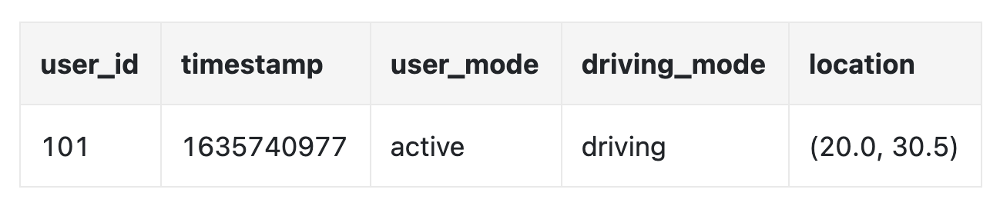
3. Geocoding database
Places/addresses aur unke lat/long pairs ka key-value store. Reads frequent, writes rare → Redis (fast reads). Navigation service origin/destination ko lat/long mein badalne ke liye isi ko use karta hai.
4. Precomputed world map images
Map tiling images precompute karke CDN pe — jaisa upar discuss kiya.
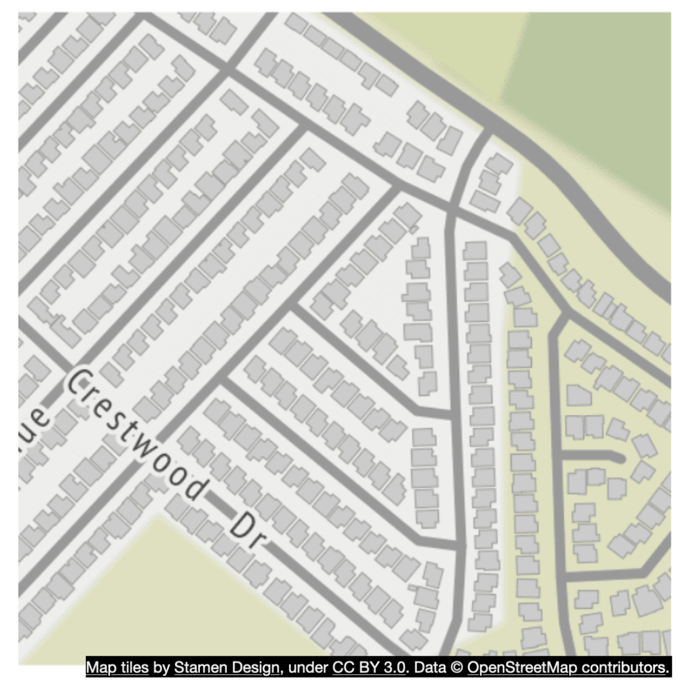
Location service (deep dive)
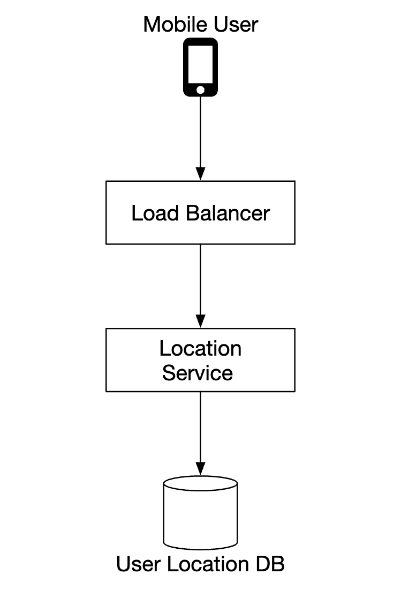
Har second millions updates → NoSQL key-value / wide-column DB. User ki location baar-baar badalti hai aur nayi aate hi purani stale ho jaati hai — isliye CAP mein availability ko consistency se upar rakhte hain. Cassandra fit hai.
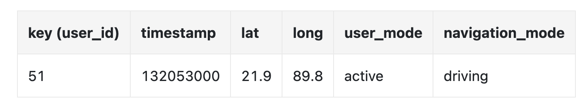
user_id= partition key — ek user ki saari location updates ek partition mein, fast access.timestamp= clustering key — partition ke andar data time ke hisaab se sorted, to "user ki last N locations" ya time range query efficient.
CREATE TABLE user_location (
user_id bigint,
ts timestamp,
lat double,
long double,
user_mode text,
navigation_mode text,
PRIMARY KEY ((user_id), ts)
) WITH CLUSTERING ORDER BY (ts DESC);Location data ka aur istemaal: Kafka
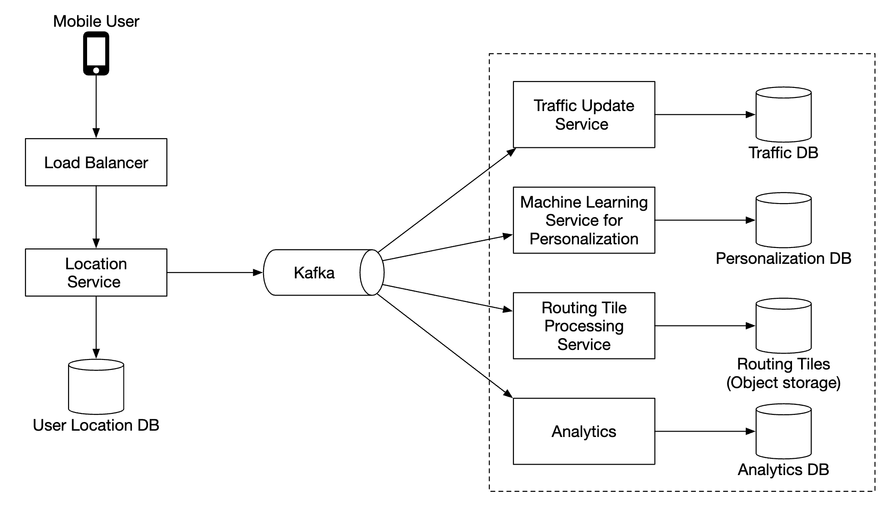
user-location), har downstream service ka apna consumer group, har ek apni speed pe padhta hai. Java stack mein Spring Kafka / Kafka Streams consumers, aur Cassandra ke liye DataStax Java driver ya Spring Data Cassandra common hain. Partition key user_id rakho taaki ek user ke updates order mein process hon.Rendering map (deep dive)
Precomputed tiles: har zoom level pe tiles ka set. Google Maps 21 zoom levels use karta hai (book). Level 0 pe poori duniya ek 256×256 tile; har agle level pe tiles ki sankhya 4× (rows aur columns dono double).
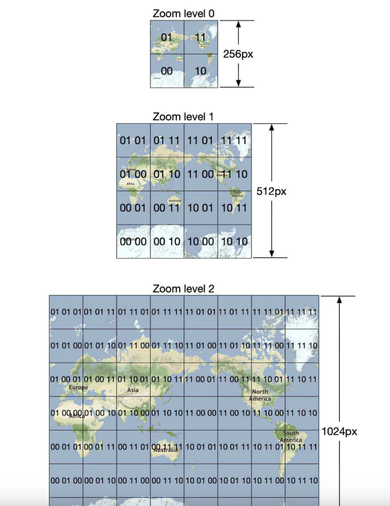
Optimization: vector tiles
WebGL ke saath ek option: images (raster) bhejne ke bajaye vector information (paths aur polygons) bhejo, aur client dynamically render kare. Fayde:
- Vector data images se kahin better compress hota hai → bandwidth bachat.
- Smooth zooming: raster image zoom karne pe pixelated/stretched lagti hai; vectors har zoom pe crisp, client next level ke tiles aane tak bhi smoothly scale kar sakta hai.
Navigation service (deep dive)
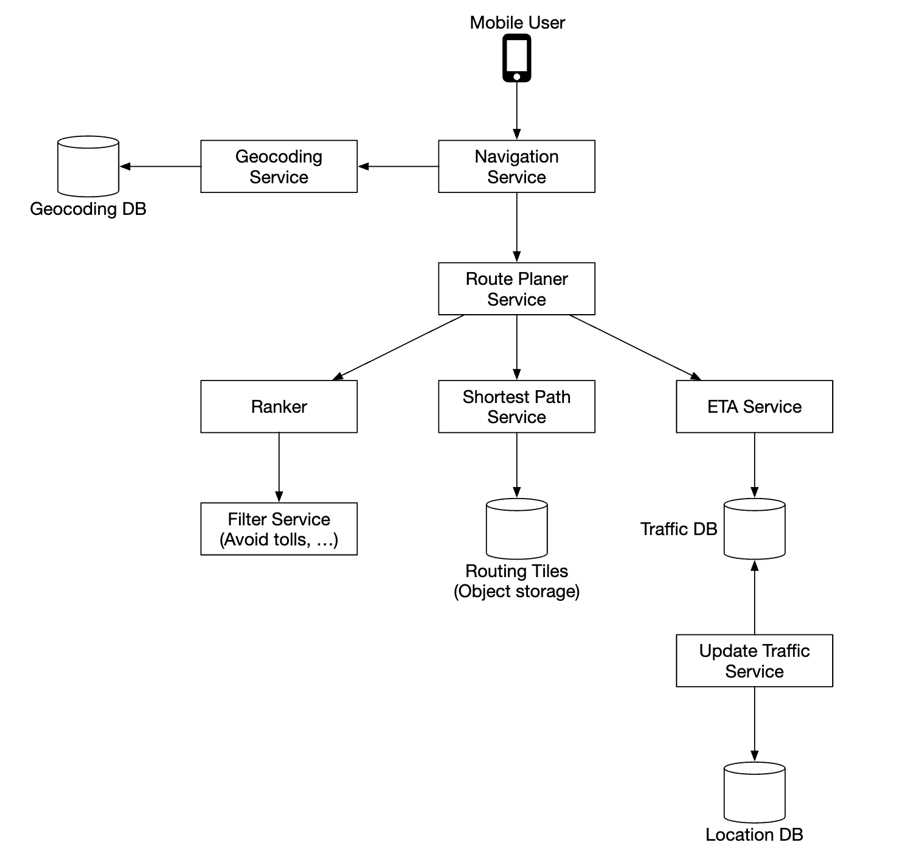
Geocoding service
Address ko lat/long mein resolve karta hai. Example request (notes mein Google Geocoding API ka URL):
https://maps.googleapis.com/maps/api/geocode/json?address=1600+Amphitheatre+Parkway,+Mountain+View,+CA — Google Maps Platform ka real Geocoding API endpoint; address param (spaces = +) ko lat/lng mein badalta hai. Note: humne check kiya — bina API key ke open karoge to "status": "REQUEST_DENIED" aur "You must use an API key…" message aata hai; asli use ke liye URL mein &key=YOUR_API_KEY chahiye (Google Cloud account se). Neeche notes ka sample response hai jo key ke saath milta hai.
{
"results": [{
"formatted_address": "1600 Amphitheatre Parkway, Mountain View, CA 94043, USA",
"geometry": {
"location": { "lat": 37.4224764, "lng": -122.0842499 },
"location_type": "ROOFTOP",
"viewport": {
"northeast": { "lat": 37.4238253802915, "lng": -122.0829009197085 },
"southwest": { "lat": 37.4211274197085, "lng": -122.0855988802915 }
}
},
"place_id": "ChIJ2eUgeAK6j4ARbn5u_wAGqWA",
"plus_code": {
"compound_code": "CWC8+W5 Mountain View, California, United States",
"global_code": "849VCWC8+W5"
},
"types": ["street_address"]
}],
"status": "OK"
}Response kaise padhein: status: "OK" = success. formatted_address = cleaned-up full address. geometry.location = asli answer (lat/lng). location_type: "ROOFTOP" = precise building-level match (approximate matches ke liye RANGE_INTERPOLATED, GEOMETRIC_CENTER, APPROXIMATE jaisi values aati hain). viewport = is result ko dikhane ke liye recommended map box (NE/SW corners). place_id = Google ka stable place identifier. plus_code = Open Location Code — address ke bina location batane ka short code. types = result kis tarah ka hai (yahan street address).
Route planner service
Current traffic aur road conditions ke hisaab se travel time ke liye optimized route suggest karta hai. Ye neeche ki services ke saath baat karta hai.
Shortest-path service
Origin/destination lat/long pair leke top-k shortest paths lautata hai — traffic ya current conditions consider kiye bina; sirf road structure pe depend karta hai. Road network rarely badalta hai, isliye results cache karna faydemand.
- Lat/long pairs se geohash nikaal ke start/end routing tiles load karta hai.
- Origin tile se shuru karke graph traverse (A* variation), zaroorat pe object storage (ya cache) se neighbouring tiles hydrate karta hai — aur lambe routes ke liye higher-level (arterial/highway) tiles pe jump.
- Jab tak destination tile tak "good enough" path na mil jaaye.
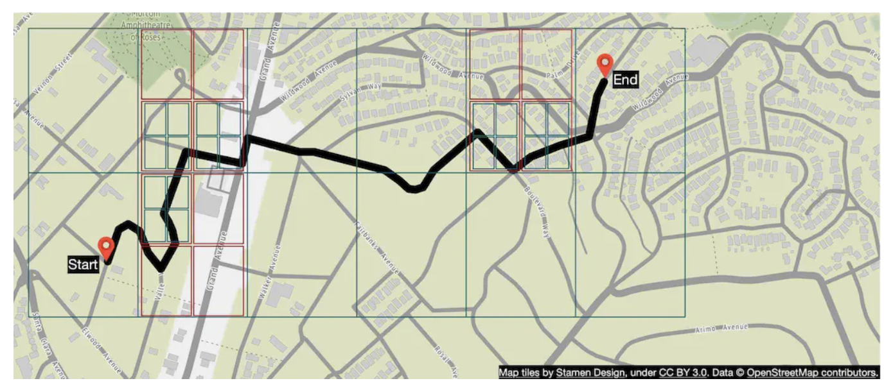
ETA service
Route planner ko possible shortest paths milne ke baad wo har route ke liye ETA service se time estimate leta hai. ETA service machine learning se current traffic + historical data ke basis pe predict karti hai. Challenge: sirf abhi ka traffic nahi, agle 10–20 minute mein traffic kaisa hoga ye bhi predict karna.
Ranker service
ETA milne ke baad routes ko user ke filters (toll roads avoid, freeways avoid) apply karke rank karta hai — fastest se slowest — aur top-k navigation service ko.
Updater services
Kafka location stream padhke async important DBs update karti hain: traffic update service (live traffic DB), routing tile processing service (nayi sadkein, band sadkein → routing tiles improve).
Improvement: adaptive ETA aur rerouting
Abhi ka design traffic badalne pe in-flight routes adapt nahi karta. Do sawaal: actively navigating users ko kaise track karein? aur data kaise store karein taaki lakhon routes mein se affected users fast milein?
Naive: har navigating user ke route ke saare routing tiles store karo:
user_1: r_1, r_2, r_3, …, r_k
user_2: r_4, r_6, r_9, …, r_n
user_3: r_2, r_8, r_9, …, r_m
...
user_n: r_2, r_10, r21, ..., r_lKisi tile (jaise r_2) mein accident hua → saari rows scan karke dekho kiske route mein r_2 hai → unhe reroute. Problem: n users × har route ki length m = O(n × m) — slow.
Better: har user ke liye origin routing tile aur uske upar alag resolution levels ke tiles store karo, jab tak destination bhi us tile mein na aa jaaye:
user_1, r_1, super(r_1), super(super(r_1)), ...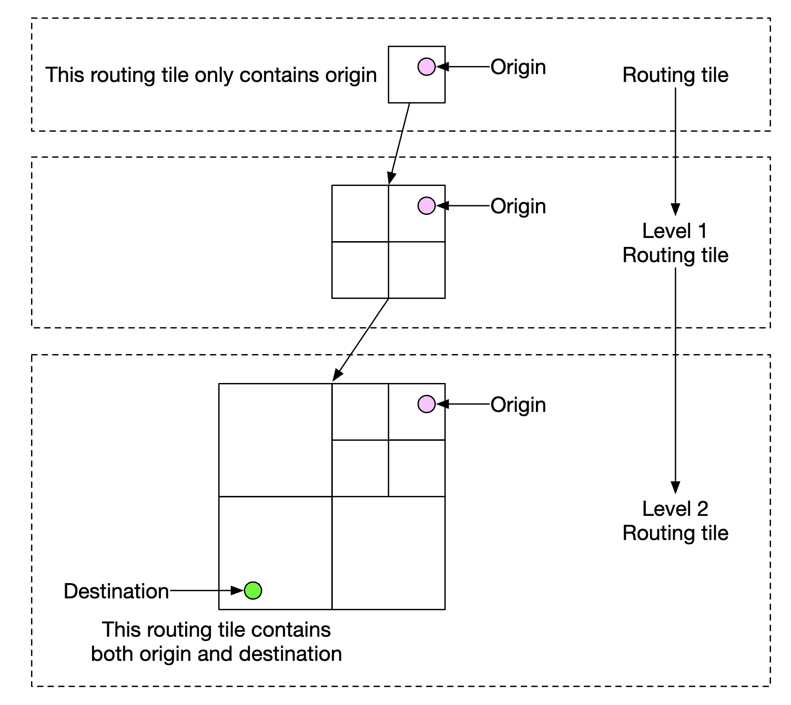
Ab check: kya user ka last (sabse bada) tile accident wale tile ko contain karta hai? Nahi → user affected nahi, skip. Haan → us user ka route detail mein check karke reroute. Isse zyada tar users jaldi filter ho jaate hain. Saath hi navigating user ke saare possible routes track karke — traffic clear hone pe — "faster route available" notify bhi kar sakte ho.
Delivery protocols: server se client ko push
| Option | Verdict |
|---|---|
| Mobile push notification | ❌ Payload size bahut limited (iOS pe ~4 KB), aur web apps pe nahi chalta |
| Long polling | Chalega, lekin server pe compute footprint zyada |
| Server-Sent Events (SSE) | Viable — one-way server→client |
| WebSocket | ✅ Kam server footprint, aur bidirectional — future features (jaise last-mile delivery) ke liye kaam ka |
Step 4: Wrap-up — final design
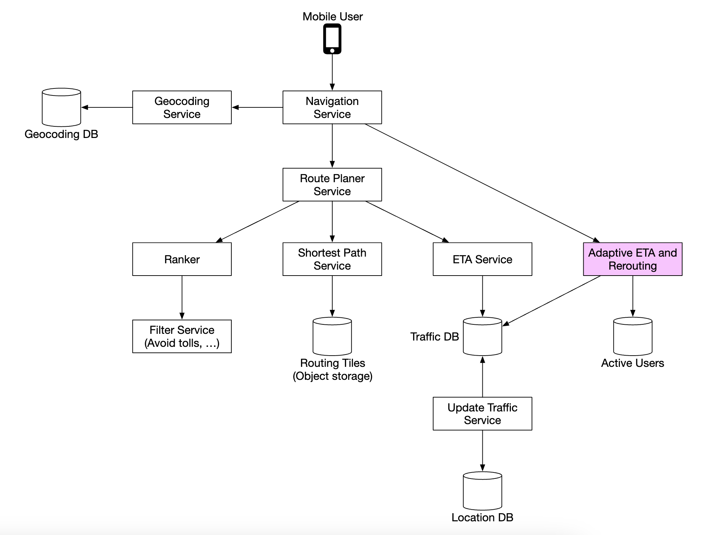
Humne teen features — location update, ETA/navigation, map rendering — ke saath Google Maps ka simplified version design kiya. Extra feature idea: multi-stop navigation — Uber, Lyft, delivery companies jaise enterprise customers ko bech sakte ho (stops ka optimal order — classic traveling-salesman-style optimization).
Interview mein kaise bolein
- (5 min) Scope: 1B DAU; location update, navigation + ETA, map rendering; travel modes; no multi-stop/places. NFRs: accuracy, smooth rendering, data/battery.
- (7 min) Map 101 quickly: lat/long, projection (Web Mercator), geocoding, geohash, tiles, road graph, hierarchical routing tiles.
- (5 min) Estimation: ~70 PB tiles; 5B min/day → ~3M QPS → batching 15s → ~200k QPS, peak ~1M.
- (10 min) HLD: location service (batch + Cassandra + Kafka), navigation service (API + response), map rendering (static tiles on CDN, tile URL service vs client calc).
- (15 min) Deep dive: data model (S3 routing tiles, Cassandra keys, Redis geocoding), vector tiles, navigation pipeline (geocoding → route planner → shortest path/ETA/ranker → updaters), adaptive ETA with hierarchical tile chains, WebSocket delivery.
- (3 min) Final diagram + multi-stop extension.
Common follow-up questions
Q: Tiles dynamically kyun nahi banate?
A: Server load bahut, aur dynamic content cache nahi hota. Static precomputed tiles + CDN = cheap aur fast.
Q: Location update har second kyun nahi bhejte?
A: ~3M QPS aur battery drain. 15s batching se ~200k QPS, data accuracy pe zyada asar nahi.
Q: Cassandra mein partition/clustering key kya?
A: user_id partition key, timestamp clustering key (DESC) — ek user ki recent locations fast.
Q: Routing tiles DB mein kyun nahi?
A: DB features (queries, transactions) chahiye hi nahi; binary adjacency files object storage (S3) mein + aggressive caching sasta aur simple.
Q: Accident hua, kaunse users reroute karein?
A: Har active user ka origin tile + super tiles chain store; sirf un users ko detail mein check karo jinke top-level tile mein accident tile aata hai.
Q: Server se client ko reroute kaise bhejoge?
A: WebSocket — push notification payload limited aur web pe nahi; long polling heavy; SSE one-way.
Key Takeaways
- Map 101: lat/long, map projection (Google = Web Mercator), geocoding/reverse geocoding, geohash, tiling.
- Roads = graph (intersections nodes, roads edges); poori duniya ek graph nahi — routing tiles, aur lambe routes ke liye hierarchical (local/arterial/highway) tiles.
- Estimation: ~70 PB map tiles; ~200k QPS location updates (15s batching), peak ~1M.
- Location service: client batching → Cassandra (user_id partition, timestamp clustering) + Kafka fan-out (traffic, ML, routing tiles, analytics).
- Map rendering: precomputed static tiles per zoom level (4× per level) on CDN; vector tiles se bandwidth bachat aur smooth zoom.
- Navigation: geocoding (Redis) → route planner → shortest path (A* on routing tiles in S3) + ML ETA + ranker (filters); updater services async.
- Adaptive ETA: active users ki hierarchical tile chain se affected users fast filter; WebSocket se push.
- Google Geocoding API URL real hai lekin API key ke bina REQUEST_DENIED deta hai.